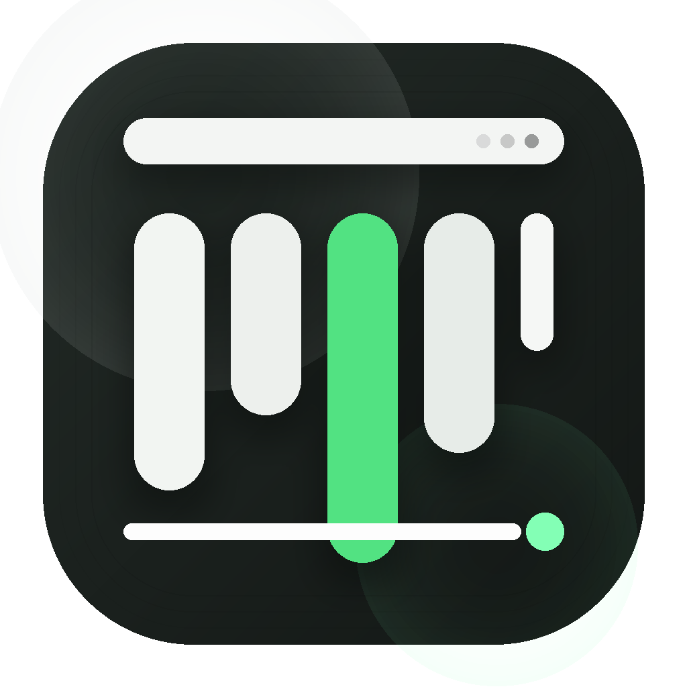
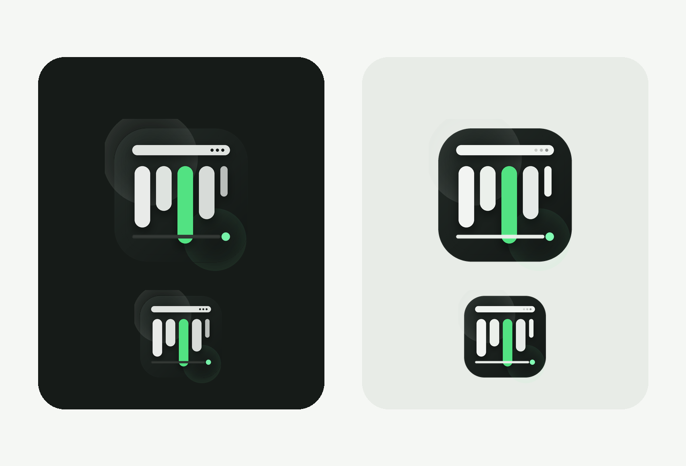

总览优先
弹出面板顶部先显示关键图表。用户不需要展开一堆区域，才能知道这台机器现在是什么状态。

mac-state版本 1.0.2
mac-state 把实时系统指标放回菜单栏该有的位置。先看最关键的信息，再按需打开细节，不把桌面变成一个喧闹的大屏监控台。
支持项目
给项目一个 Star 如果你喜欢它，这是最直接的支持方式。参与贡献
Fork 并开始改进 把你需要的监控模块和界面体验直接做进来。获取构建
打开 Releases 下载 1.0.2 构建、校验值，并查看这次内存读数修正。如果你喜欢这个项目， 欢迎给它一个 Star。
为什么它感觉不一样
弹出面板顶部先显示关键图表。用户不需要展开一堆区域，才能知道这台机器现在是什么状态。
面板卡片是可配置的。用户可以只显示自己关心的模块、调整顺序，并决定哪些区域默认展开。
CPU、内存、磁盘、网络、电池、告警、Widget 和登录启动都建立在 Swift、SwiftUI 与 AppKit 上，而不是跨端壳。
品牌方向
这套视觉系统故意不做“监控大屏风格”。logo 和页面都只让一个信号绿承担“实时状态”的含义，其余部分保持安静、技术感和原生工具感。

1.0.2 更新了什么
01
可回收缓存不再直接推高内存百分比，所以看到 100% 的概率会明显下降，读数和“机器有没有卡”会更一致。
02
新的内存计算会同时反映在实时面板、历史曲线和高内存告警里，避免不同界面对同一台机器给出冲突印象。
03
本次发布同步更新了 PKG、ZIP、校验值、官网文案和更新日志，下载入口会直接指向新的 1.0.2 资产。
发布
1.0.2 修正了内存占用读数，避免把可回收缓存误算成接近 100% 的硬压力。支持 macOS 11+，兼容 Intel 与 Apple Silicon。
如果这个项目对你有帮助， 欢迎在 GitHub 上点亮 Star。